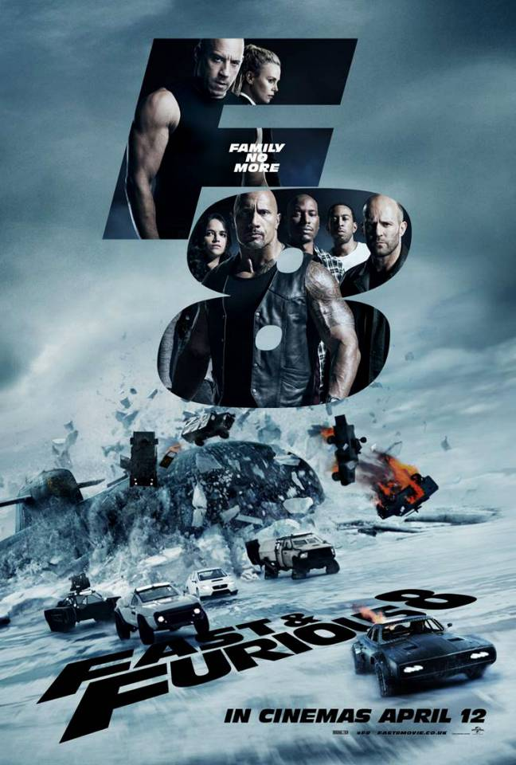

Fast and the furious 8
In Fast & Furious 8, Dominic Toretto and his wife, Letty, are enjoying their honeymoon in Cuba when they notice Dom’s cousin, Fernando, getting into trouble with a loan shark named Hernan Reyes. Fernando owes money and can’t pay off his debts. Dom encourages Fernando to settle the matter through a car race. They compete fiercely, and Dom narrowly wins. However, instead of claiming the car, he lets Fernando keep it, emphasizing that respect matters more than material possessions. But the idyllic honeymoon takes a dark turn when Dom encounters the enigmatic cyber terrorist, Cipher. She lures him into her world by asking for help fixing her car, and eventually, she persuades him to work for her. Cipher forces Dom to keep their collaboration a secret by threatening his team. She assigns him a mission: retrieve an EMP device that went missing from the Gulf and ended up in Berlin. This powerful device can wipe out an entire electrical grid. As Dom races against time, he crosses paths with Hobbs, who tries to convince him to deliver the EMP device to him. Dom gathers his team and informs them of the mission. In Berlin, they create a diversion, steal the EMP, and escape. However, Dom decides to take another route and delivers the device to Cipher instead. Hobbs gets arrested during the process. Things escalate when Deckard Shaw, whom Hobbs helped imprison, enters the picture. Both Shaw and Hobbs are bailed out and recruited by Mr. Nobody, an intelligence officer. The team is furious with Dom’s choices and decides to work together to capture him and Cipher. During their pursuit, they discover that Cipher is after Ramsey’s software, known as “God’s Eye”, which can turn any technological device into a weapon. Cipher reveals that she has Dom’s ex-lover, Elena, and their son hostage, ensuring Dom’s loyalty. Despite the tension, Dom manages to escape briefly to seek help from Shaw’s mother. The team continues their efforts to capture him as he steals a nuclear football on his latest mission. The stakes are high, and the fate of the Furious hangs in the balance .
- Author :Rob Cohen
- Film evaluation :10/7
- Publication date :2017
- Movie stars :Vin Diesel(Dominic Toretto),Michelle Rodriguez(Letty),JordanaBrewster(MiaToretto),Rick Yuen(Johnny Tran),ChadLindberg(Jesse),Johnny Strong(Leon)
You can watch the movie her